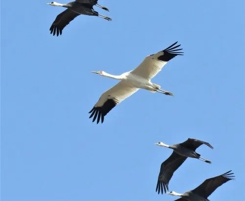

鸟类 · 动物界
白鹤 Leucogeranus leucogeranus

全身雪白、脸和额部鲜红的大型鹤类，繁殖于西伯利亚苔原，而在鄱阳湖越冬的数量占全球绝大多数。
- 分类
- 门脊索动物门纲鸟纲目鹤形目科鹤科属白鹤属
- 栖息环境
- 繁殖于西伯利亚苔原沼泽，越冬于长江中下游的浅水湖泊与草滩
- 地理分布
- 繁殖于俄罗斯西伯利亚，越冬于中国鄱阳湖及印度等地，中国为主要越冬地
- 保护级别
- IUCN 极危（CR）；中国国家一级保护动物
物种志
白鹤体长可达 140 cm，体重 5–8 kg，翼展 210–230 cm，是体形高大的鹤类。它全身羽毛洁白，只有初级飞羽为黑色，飞行时黑白对比十分鲜明；头顶和脸部裸露的皮肤呈鲜红色，喙和腿呈暗红色至粉红色，眼睛为黄色。站立时它常把长颈伸直，显得亭亭玉立。
白鹤在俄罗斯西伯利亚的苔原湿地繁殖，秋季南迁，几乎全部种群都到中国江西鄱阳湖越冬，占全球总数的九成以上。它们主要取食水生植物的根茎和块茎，尤其是苦草的块茎，也吃昆虫和小鱼。繁殖期每窝产卵 2 枚，孵化 28–30 天，雏鸟出生后不久就能跟随亲鸟涉水觅食。白鹤是数量最少的鹤类之一，被世界自然保护联盟列为极危物种，中国将其列为国家一级保护动物。
形态与习性
- 食性水生植物根茎和块茎，尤其喜食苦草，也吃昆虫和小鱼
- 体长可达 140 cm
- 体重5–8 kg
- 翼展210–230 cm
- 繁殖每窝 2 枚卵，孵化 28–30 天
- 寿命野外约 20–30 年
- 种群全球约 4000 只，绝大多数在鄱阳湖越冬
趣味知识
- 白鹤几乎全部种群都在江西鄱阳湖越冬，一座湖泊养活了全球九成以上的白鹤。
- 它们以苦草的块茎为主食，因此格外依赖水位稳定、水草丰茂的浅水湖泊。
- 白鹤飞行时黑色初级飞羽与雪白身体对比鲜明，队形整齐如一线。
- 白鹤是 IUCN 极危物种，也是数量最少的鹤类之一。